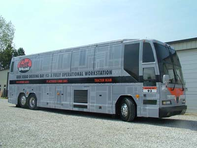
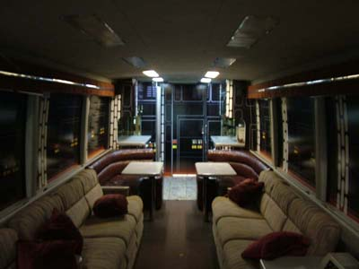
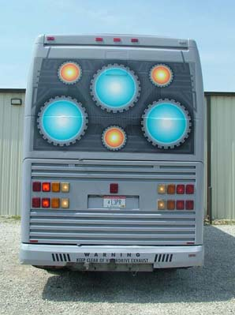

Much later tonight, well after the sun goes down, NYLine members and the lucky passersby on W. 54th Street will be treated to an awesome sight... a huge Death Star bus pulling up to our very own tent-home!
From May 11 through May 18, NYLine welcomes a surprise visitor: the Geek Squad Docking Bay, a 40-foot fully operational workstation dedicated to helping fans stay connected to friends, family, and work, of course. The Star Wars-themed workstation includes Internet-enabled laptops and other mobile technology to enable fans to maintain contact with the rest of the galaxy while waiting in line for the release of the final prequel.
The NYLine has played host to hundreds of eager fans lined up in front of the Ziegfeld Theater since April 30, raising money and awareness for the Starlight Starbright Children's Foundation. Geek Squad, the first 24-hour computer support task force and living embodiment of the term "geek," and a sponsor of NYLine, is rewarding selfless fans by giving us the ability to stay connected with our lives and jobs outside the line...
